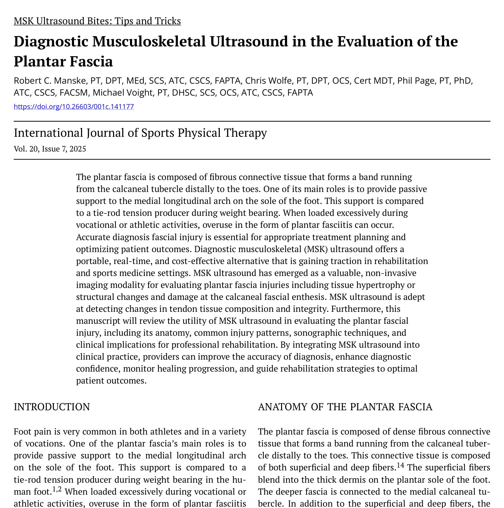
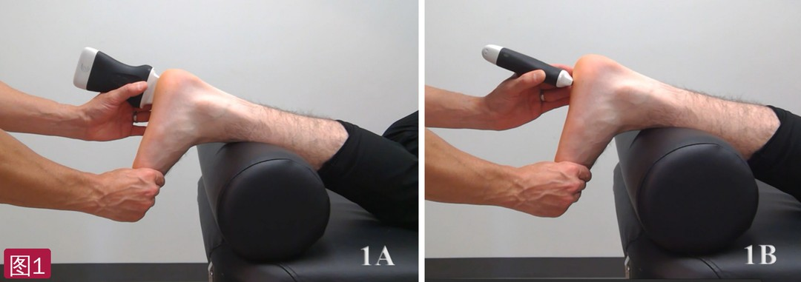
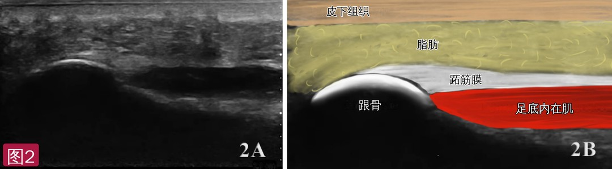
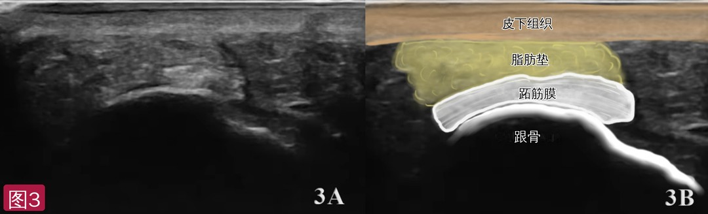
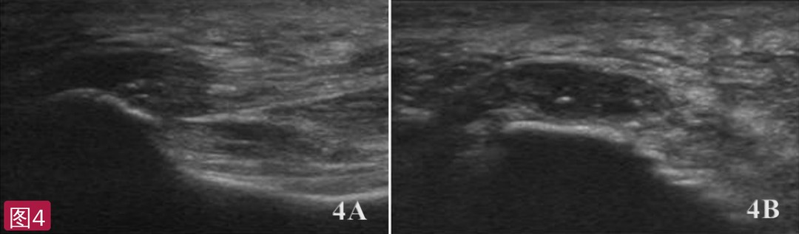
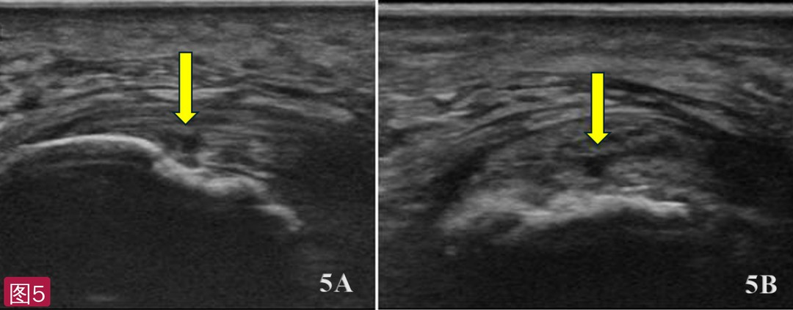
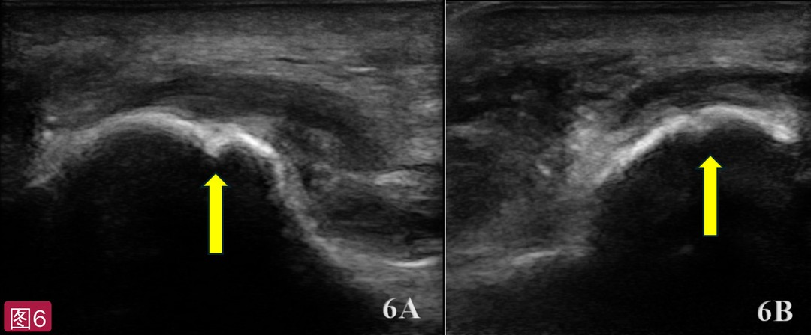

🔖原文首页（IJSPT 2025 年第 20 卷第 7 期，“肌骨超声小贴士”栏目）
📚 文献卡片
▪ 英文原题：Diagnostic Musculoskeletal Ultrasound in the Evaluation of the Plantar Fascia（诊断性肌骨超声评估跖筋膜）
▪ 作者：Robert C. Manske, PT, DPT · Chris Wolfe, PT, DPT · Phil Page, PT, PhD · Michael Voight, PT, DHSc
▪ 栏目：MSK Ultrasound Bites: Tips and Tricks（肌骨超声小贴士）
▪ 期刊：International Journal of Sports Physical Therapy（IJSPT）
▪ 年卷期：2025;20(7):1091-1096
▪ PMCID：PMC12222039
足痛在运动员和各类职业人群中都很常见。跖筋膜的主要作用之一是为内侧纵弓提供被动支撑，负重时像一根“拉杆”产生张力。职业或运动中负荷过大时，就可能出现过用性的跖筋膜炎。
据报道，跖筋膜炎影响多达 10% 的美国人，被认为是美国成人足跟痛最常见的原因，每年就诊超过 100 万人次，可严重影响身体活动、社交和整体健康。病因复杂、尚未完全明确，一般认为是机械过载：内在因素如体重增加，外在因素如运动强度、频率和时长的增加。
肌骨超声便携、实时、便宜，跖筋膜位置表浅，非常适合超声检查——可以看到增厚、结构改变和跟骨止点损伤。
| 项目 | 要点 |
|---|---|
| 探头 | 高频线阵探头 |
| 体位 | 俯卧，踝前垫枕或毛巾卷，足放松（也可坐位），足和拇趾中立或轻度背屈使筋膜绷紧 |
| 长轴（LAX） | 从跟骨内侧结节沿足底向跖骨头方向放置，略向内斜，沿筋膜最厚处；向外移动可看外侧束 |
| 短轴（SAX） | 探头转 90°，置于跟骨止点稍远处；评估厚度、对称性，横扫可比较内、中、外三束 |
| 正常 | 止点处厚而高回声、纤维状，向远端逐渐变薄；原文图注给出止点厚约 3.5～4.0 mm |
| 异常 | 止点处厚度 >4.0 mm、低回声且不均匀、边界模糊；可见骨赘/钙化、多普勒血流增加；撕裂表现为纤维中断和低/无回声裂隙 |
| 动态 | 被动背屈踝和足趾，可显示静息时看不到的筋膜裂隙 |
一句话概括：长轴看止点厚度和纤维结构，短轴看对称性和三束，厚度超过 4 mm 加低回声就要考虑跖筋膜病。
• 由致密纤维结缔组织构成，从跟骨结节向远端延伸到足趾；浅层纤维与足底厚厚的真皮相连，深层连接跟骨内侧结节
• 在前足分成内侧、中央、外侧三束；中央束最重要，是纵弓的主要支撑，产生绞盘效应，并在步态中协助距下关节旋后
• 组织非常坚韧：原文写厚 2.0～2.5 mm，可承受约 180 磅（约 82 kg）拉力而不被拉长
• 跖筋膜也会萎缩：Romero-Morales 等发现，外侧踝扭伤者的跖筋膜横截面积小于无踝扭伤者
• 典型症状：足底持续疼痛，长时间不负重后迈出的头几步出现锐利刺痛（晨起或久坐后），继续行走后逐渐减轻，但长时间负重又会加重
• 实时成像：足踝活动中动态评估跖筋膜完整性
• 高分辨率：清楚显示跖筋膜及其跟骨结节止点
• 可及、省钱：便携、普及，比 MRI 便宜
• 信度好：超声测量跖筋膜厚度具有良好的相对信度和绝对信度
• 深度不是问题：跖筋膜表浅，显示效果很好
• 局限：依赖操作者和设备；骨和钙化可产生伪像；复杂足部病例不能完全替代 MRI
• 探头：高频线阵
• 体位：俯卧，踝前方垫枕或毛巾卷，靠近检查者一侧，足放松；也可坐位。足和拇趾保持中立或轻度背屈，使筋膜绷紧
• 长轴切面：探头沿足底纵向放置，从跟骨内侧结节开始向跖骨头方向，略向内斜，沿跖筋膜最厚处（图 1A）
• 短轴切面：保持体位，把探头转到与筋膜纤维垂直，通常位于跟骨止点稍远处（图 1B）
• 动态评估：被动背屈踝和足趾，可显示静息时看不到的筋膜裂隙，提示部分撕裂或功能受限

🔖图1：探头放置。1A 长轴，从跟骨内侧结节沿足底向远端；1B 短轴，探头与筋膜纤维垂直，置于跟骨止点稍远处
在跟骨内侧结节高回声凸起附近找到中央束：跖筋膜表现为从内侧结节向足趾延伸的高回声纤维带；探头向第五跖骨方向外移可看到外侧束；筋膜深面的低回声组织是足底深层肌肉。止点处厚而高回声、纤维状（原文图注写约 3.5～4.0 mm），向前逐渐变细。跟骨皮质为连续的强回声线，后方伴声影；跟骨脂肪垫位于筋膜浅层，呈分叶状低回声；更远处可见趾短屈肌。

🔖图2：跖筋膜止点长轴正常声像图。2A 原始图；2B 标注图：皮下组织、脂肪、跖筋膜、跟骨和足底内在肌（标注已改为中文，比例尺单位已去除）
跖筋膜呈位于跟骨内侧结节上方、椭圆形到扁平形的高回声结构，边界清楚、回声均匀；浅层为真皮和皮下脂肪，深层为低回声的脂肪垫/足内在肌和弧形的跟骨皮质强回声线。中央束最明显，有时可见内侧和外侧束。短轴特别适合评估厚度和对称性，发现局灶增厚、低回声或纤维中断，横扫还可比较三束。

🔖图3：跖筋膜止点短轴正常声像图。3A 原始图；3B 标注图：皮下组织、脂肪垫、跖筋膜和跟骨（标注已改为中文）
| 病变 | 超声表现 |
|---|---|
| 跖筋膜炎/筋膜病 | 跟骨内侧止点处增厚，>4.0 mm 提示病变；正常高回声纤维结构变为低回声、不均匀，提示炎症和胶原基质退变；边界（尤其靠近跟骨的深缘）变模糊；慢性者可见止点骨赘/钙化（跟骨刺）；多普勒信号增加提示活动性炎症 |
| 撕裂 | 局灶性纤维中断，筋膜内出现无回声或低回声裂隙，多在跟骨止点附近，也可更远；部分撕裂为增厚/退变筋膜内的局部低回声区或裂隙；完全断裂为筋膜带完全中断，可伴断端回缩；急性期可伴积液、筋膜周围水肿或血肿 |
| 跟骨内侧应力性骨折（合并筋膜病） | 止点处筋膜增厚 >4 mm、低回声、纤维结构消失；邻近跟骨内侧结节皮质不规则、骨膜抬高 |
长轴最常用，可完整评估筋膜起点、结构和骨皮质界面，显示撕裂沿长轴的范围；短轴用于评估对称性、周围软组织改变（如筋膜周围水肿），确认缺损的宽度和深度，区分真正撕裂与炎症改变。部分撕裂时对比健侧尤其有用。

🔖图4：伴钙化的跖筋膜炎。4A 长轴；4B 短轴——筋膜增厚、低回声，止点处可见钙化/骨赘

🔖图5：跖筋膜炎伴小撕裂。5A 长轴；5B 短轴——黄箭头示筋膜纤维中断处的低回声裂隙

🔖图6：跖筋膜病合并跟骨内侧应力性骨折。6A 长轴；6B 短轴——筋膜增厚并低回声，黄箭头示跟骨内侧结节旁皮质不规则、骨膜抬高
• 早期发现、准确分级：快速区分筋膜增厚、骨刺和更严重的跖筋膜断裂，指导治疗计划
• 动态功能测试与随访：治疗中监测恢复；系列超声评估组织重塑、厚度变化和是否可以进阶
• 引导介入：超声引导精准注射，如糖皮质激素
• 患者教育：实时图像直观解释损伤，建立合理的恢复预期
• 证据级别低：简短的技术栏目文章，没有原始数据，以作者经验和少量文献为主
• 亮点：长轴/短轴探头放置、正常标注图和三种典型病理图一一对应，给出“>4.0 mm”这一实用的厚度阈值
• 厚度数字前后矛盾：解剖部分写跖筋膜厚 2.0～2.5 mm，图 2 图注写正常止点厚 3.5～4.0 mm，而图 4 以 >4.0 mm 提示病变——正常上限与病变阈值几乎重叠，读者应以止点处测量、结合回声改变和健侧对比判断
• 部分描述不严谨：图 6 图注提到“低回声骨髓改变”，常规超声无法穿透骨皮质评估骨髓，应力性骨折仍需影像学确认；病理征象中列出“关节积液”与跖筋膜关系不大
• 疑似沿用其他文章的文字：摘要说超声“善于检测肌腱组织”，临床意义部分写“动态评估韧带功能”，应为筋膜；长轴切面写“从远端靠近跟骨内侧结节开始”，跟骨结节实为近端
• 体位说法不一：技术部分只写俯卧，后面写俯卧或坐位；另有“to a large extend”“more sever”等笔误
① 体位：俯卧（或坐位），踝下垫毛巾卷，足和拇趾中立或轻度背屈
② 长轴：从跟骨内侧结节沿足底向远端，看止点厚度和纤维结构
③ 短轴：止点稍远处横放，看厚度、对称性和内、中、外三束
④ 正常：高回声纤维带，止点最厚、向远端变薄，边界清楚
⑤ 异常：止点 >4.0 mm、低回声不均匀、边界模糊，骨刺/钙化，多普勒血流增加；撕裂见纤维中断和裂隙
★ 技巧：被动背屈踝和足趾动态观察，与健侧对比；怀疑应力性骨折等复杂情况仍需 MRI
欢迎关注骨科康复小黄公众号，获取更多物理治疗的专业知识！
📄参考文献：
Manske RC, Wolfe C, Page P, Voight M. Diagnostic Musculoskeletal Ultrasound in the Evaluation of the Plantar Fascia. Int J Sports Phys Ther. 2025;20(7):1091-1096. PMCID: PMC12222039.
文中 6 张图片均来自原文：图 2B、3B 解剖标注已改为中文，图 2A 比例尺单位已去除；表格为编者整理，仅用于学术交流。